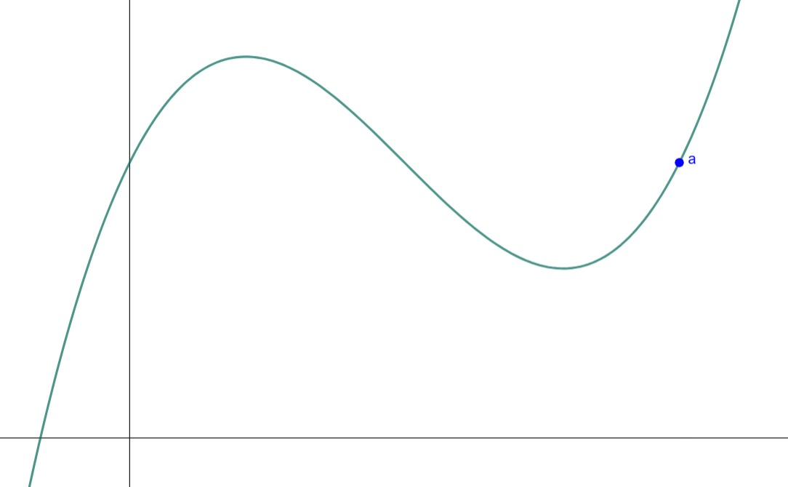
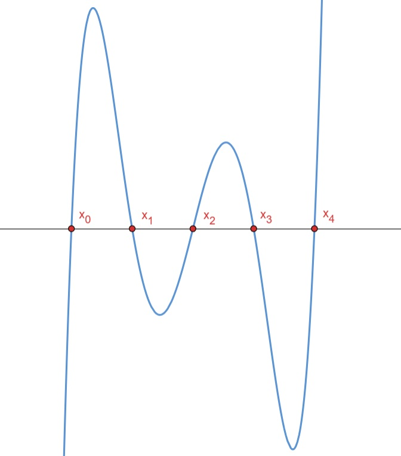
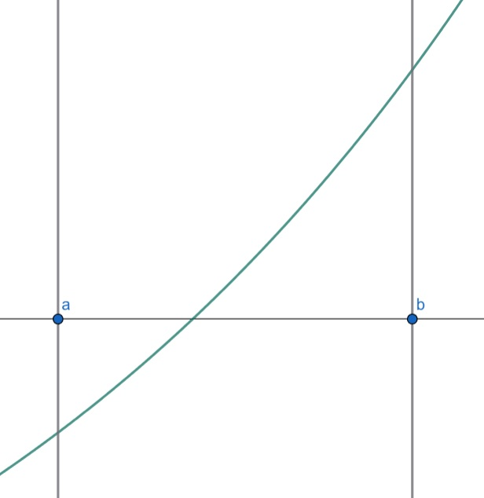
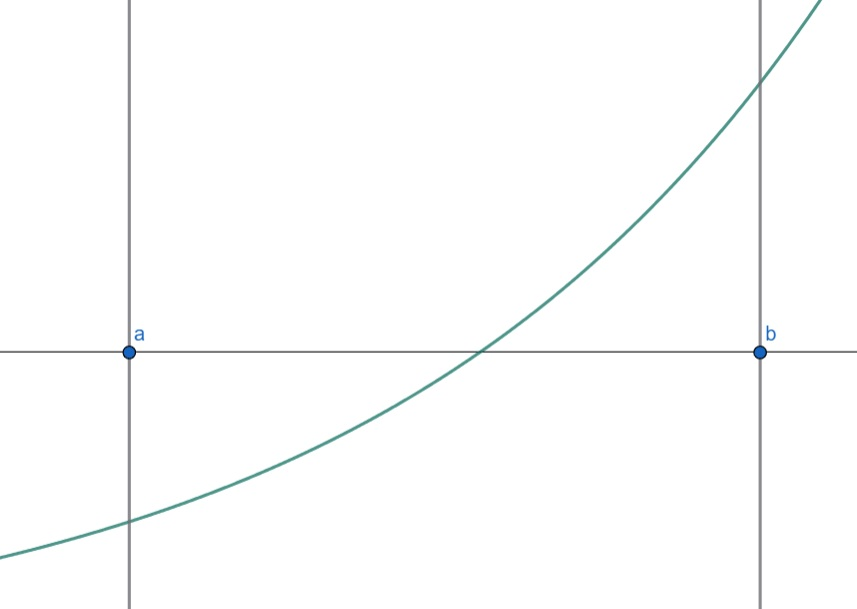
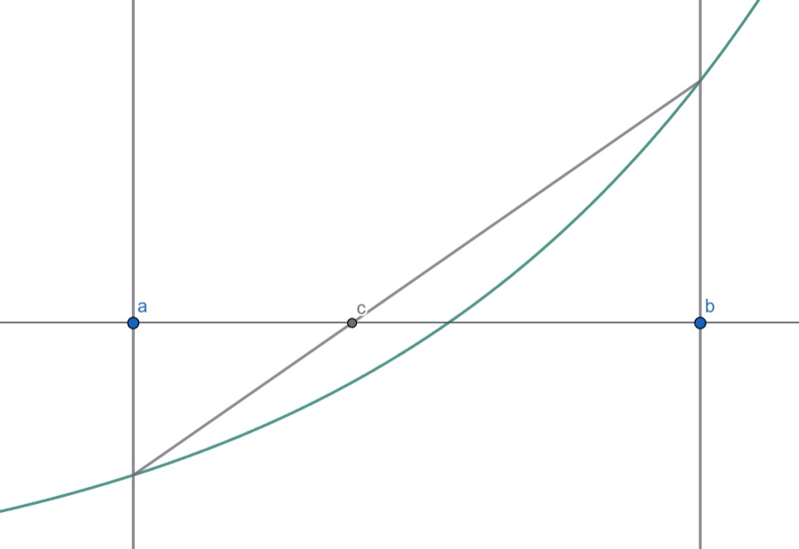
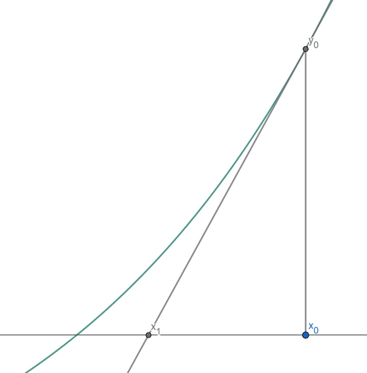
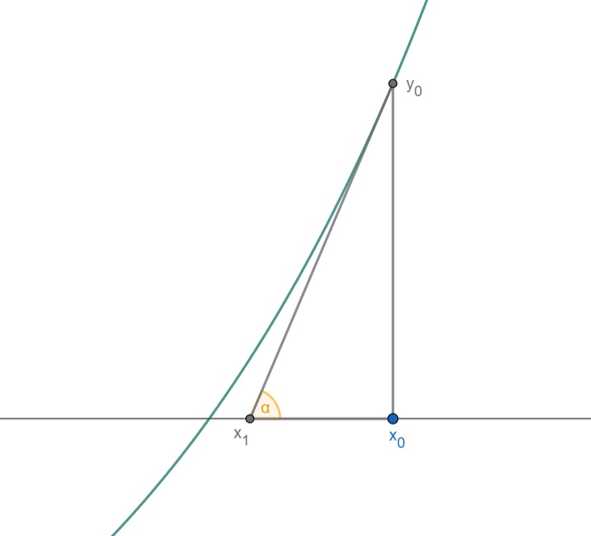
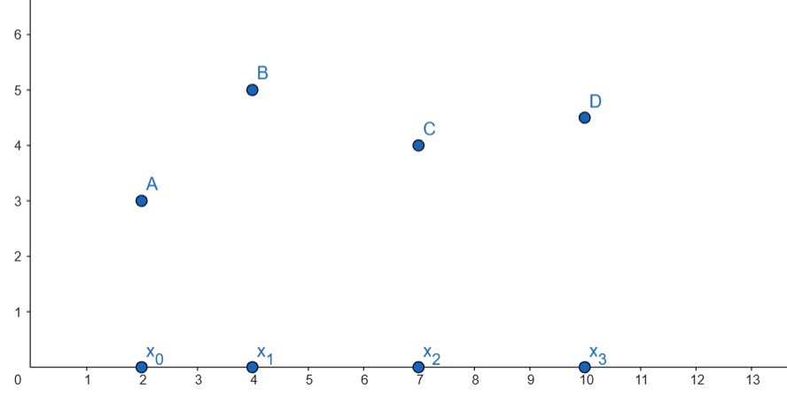

Připomeňme si tvar, ve kterém jste byli zvyklí polynom zapisovat. Libovolný polynom můžeme upravit na tvar \[
a_nx^n + a_{n-1}x^{n-1} + \cdots \ a_1x + a_0,
\] kde \(n \in \mathbb{N}\) a \(a_0, a_1, \cdots, a_n \in \mathbb{R}\).
Definice polynomu
Pod pojmem polynom rozumíme libovolnou funkci ve tvaru \[
p(x) = a_0 + a_1x + a_2x^2 + \cdots + a_nx^n,
\] kde \(k \in \mathbb{N}\) a \(a_k \in \mathbb{R}\).
U každého polynomu můžeme určit jeho stupeň, který je vymezen následující definicí.
Definice stupně polynomu
Nechť \(p(x)\) je polynom. Pak definujeme stupeň polynomu \(st(p)\) takto: jestliže \(p = a_0 + a_1x + a_2x^2 + \cdots + a_nx^n\) a \(a_n \neq 0\), pak \[st(p) = n.\]
1.2 Limita
Zdroj
Další informace včetně příkladů naleznete v učebním materiálu:
Na následujícím obrázku si vysvětlíme, proč je nástroj limity tak důležitý. Máme funkci \(f\) s definičním oborem \(D(f) = \mathbb{R} \setminus \{a\}\).

Motivace k vytvoření nástroje limity
V bodě \(a\) není funkce \(f\) definována. Nicméně na základě naší vizualizace má smysl se ptát, k jakým hodnotám se blíží jednotlivé části funkce \(f\)?
Funkce se bude zleva i zprava blížit stejné hodnotě. Tímto způsobem tak můžeme odstranit body, v nichž není funkce definována. Navíc je limita nástrojem, jak odhadnout chování v okolí daného bodu (včetně okrajů definičního oboru v \(\pm\infty\)).
Definice limity
Uvažujme funkci \(f\) definovanou na nějakém prstencovém okolí bodu \(a\). Řekneme, že reálné číslo \(L\) je limita funkce \(f\) pro \(x\) jdoucí k \(a\), nebo že funkce konverguje k tomuto \(L\) pro \(x\) jdoucí k \(a\), jestliže \[
(\forall\; \epsilon > 0) \;(\exists \;\delta > 0)\;(\forall\; x\in \langle x-\delta;x+\delta \rangle\setminus \{x\});\; f(x) \in \langle L-\epsilon; L+\epsilon\rangle
\] Značení je \[\lim{f(x)}=L.\]
Můžeme také psát \(f \to L\) pro \(x \to a\).
Pokud takové \(L\) existuje, řekneme, že \(f\)konverguje v \(a\), jinak řekneme, že \(f\)diverguje v \(a\).
1.3 Derivace
Zdroj
Další informace včetně příkladů naleznete v učebních materiálech:
Geometrická podstata derivace vychází z hledání směrnice tečny \(t\) (na obrázku červeně). Co bez pochyb budeme umět najít je směrnice sečny \(s\) (na obrázku modře), označme ji \(k\). Když se podíváme na obrázek, můžeme vyjádřit směrnici sečny takto \[
\tan \beta = \frac{f(x)-f(x_0)}{x-x_0}.
\] Nyní musíme využít limitní úvahy. Tečnu v bodě \(x_0\) z této sečny dostaneme tak, že se bodem \(x\) budeme přibližovat k bodu \(x\). \[
\tan \beta = \lim_{x \to x_0} \frac{f(x)-f(x_0)}{x-x_0}
\] Nyní si označme šířku mezi body na ose \(x\) takto \(h = x-x_0\). Nyní upravme naší rovnici podle této substituce. Zároveň, přeznačíme limitu, jelikož chceme aby se šířka \(h\) blížila 0. Tím již dostaneme tečnu a bude platit \(\alpha = \beta\)\[
\tan \alpha = \lim_{h \to 0} \frac{f(x_0 + h) - f(x_0)}{h}
\] Nyní už jen stačí vzpomenout, že pro směrnici přímky \(k\) platí, že \(k = \tan \alpha\). Dostáváme se tak k naší rovnici derivace \[
k = \lim_{h\to 0} \frac{f(x_0 + h) - f(x_0)}{h}.
\]
Definice derivace
Mějme dánu funkci \(f(x)\). Existuje-li limita \[
\lim_{h\to0} \frac{f(a+h)-f(a)}{h},
\] potom její hodnotu nazýváme derivací funkce \(f(x)\) v bodě \(a\) a značíme ji symbolem \(f'(a)\).
1.4 Integrál
Zdroj
Další informace včetně obrázků naleznete v učebnici:
Podstatou neurčitého itegrálu je nalezení primitivní funkce \(F(x)\) k funkci \(f(x)\), neboli funkce, z níž po jejím zderivování dostaneme původní funkci. \[
\int f(x) \, \mathrm{d}x = F(x)
\] Musí pak platit \[
F'(x) = f(x).
\] Nicméně v numerických metodách se snažíme o vyčíslení integrálu, tedy o výpočet obsahu mezi funkcí \(f(x)\) a osou \(x\). To znamená, že se budeme snažit o výpočet určitého integrálu na intervalu \(\langle a; b\rangle\)\[
\int_{a}^{b} f(x) \, \mathrm{d}x.
\] K výpočtu určitého integrálu se používá následující věta.
Newton-Leibnizova věta
Nechť \(a<b\), nechť \(\exists \int_{a}^{b} f(x)\), nechť \(F(x)\) je funkce, která má tyto vlastnosti:
je spojitá na intervalu \(\langle a;b \rangle\),
\(\forall x \in \langle a;b \rangle; \; F'(x) = f(x)\).
Pak platí \[
\int_{a}^{b} f(x) = F(b) - F(a).
\]
2 Řešení nelineárních rovnic
V této kapitole se snažíme o nalezení kořenů nelineárních rovnic, tj. hledáme bod, v němž platí \(f(x) = 0\), kde \(f\) je funkce.

Hledané body
2.1 Volba funkce vhodné pro aplikování metod
Nejprve si zvolíme funkci, na níž budeme postupně představovat všechny metody řešení nelineárních rovnic. Zvolme funkci \[
f(x) = x^3 - x - 2.
\]
2.2 Metoda půlení intervalu (bisekce)
Zdroj
Další informace včetně příkladů naleznete v učebnicích:
Metoda půlení intervalu je nejjednodušší z metod řešení nelineárních rovnic. Mějme spojitou funkci \(f\) a interval \(\langle a, b \rangle\), pro který platí, že \(f(a) \cdot f(b) < 0\). Z následující věty potom plyne existence alespoň jednoho kořene na tomto intervalu.
Věta
Je-li funkce \(f\) spojitá na intervalu \(\langle a, b \rangle\) a platí-li \(f(a)f(b) < 0\), pak v intervalu \(\langle a, b \rangle\) leží alespoň jeden kořen rovnice \(f(x) = 0\).
Myšlenka této věty je jednoduchá - v krajních bodech intervalu jsou odlišná znaménka. Z předpokladu spojitosti pak plyne pochopitelný fakt, že funkce \(f\) musí na tomto intervalu protnout osu \(x\).
Samotný výpočet kořene se nyní odvíjí od zužování intervalu, kdy vezmeme bod v polovině intervalu \(c = \frac{a+b}{2}\) a zjistíme zda není kořenem rovnice. Pokud tomu tak není, zjistíme, který z dvou vzniklých intervalů splňuje podmínku \(f(a) \cdot f(b) < 0\) a s tímto novým intervalem pak pokračujeme znovu.
Tento postup následně opakujeme, dokud nedosáhneme požadované přesnosti. Kořenem dané rovnice je střed intervalu a požadovanou přesností je polovina momentálního intervalu \(\langle a, b \rangle\).

Původní interval \(\langle a,b \rangle\)
Vytvoření nového intervalu \(\langle a,c \rangle\)
Metoda půlení intervalu v jazyce R
# Funkce: bisection(f, a, b, tol, maxIter)# - f: spojitá funkce jedné proměnné (function(x) ...)# - a, b: krajní body intervalu, kde f(a) * f(b) < 0# - tol: tolerance chyby (např. 1e-6)# - maxIter: maximální počet iterací############################################################bisection <-function(f, a, b, tol =1e-6, maxIter =100) {# Výpočet hodnot na krajích intervalu fa <-f(a) fb <-f(b)# Podmínka nutná pro zaručení kořene (f(a)*f(b) < 0)if (fa * fb >0) {cat("Chyba: Na intervalu není změna znaménka — nelze zaručit kořen.\n")return(NULL) }# Proměnná pro střed intervalu c <-NA# Iterační smyčkafor (i in1:maxIter) { c <- (a + b) /2# střed intervalu fc <-f(c) # hodnota funkce ve středu# Kontrola přesnosti — splněno?if (abs(fc) < tol || (b - a) /2< tol) {cat(sprintf("Konvergence dosažena po %d iteracích.\n", i))return(c) }# Výběr nového intervalu podle znaménkaif (fa * fc <0) { b <- c fb <- fc } else { a <- c fa <- fc } }# Pokud metoda neskonverguje do maxItercat("Varování: Metoda nedosáhla požadované přesnosti.\n")return(NULL)}# PŘÍKLAD POUŽITÍ# Definice testovací funkcef <-function(x) x^3- x -2# známe kořen ≈ 1.52138# Spuštění bisekceroot <-bisection(f, a =1, b =2, tol =1e-8, maxIter =100)
Konvergence dosažena po 27 iteracích.
if (!is.null(root)) {cat(sprintf("Nalezený kořen: x = %.12f\n", root))cat(sprintf("Kontrola: f(x) = %.3e\n", f(root)))}
Nalezený kořen: x = 1.521379701793
Kontrola: f(x) = -2.979e-08
2.3 Metoda regula falsi
Zdroj
Další informace včetně příkladů naleznete v učebnicích:
Princip metody regula falsi se do značné míry podobá bisekci. Stále předpokládám spojitou funkci \(f\) a interval \(\langle a, b \rangle\), pro nějž platí \(f(a) \cdot f(b) < 0\).
Rozdělení intervalu nyní nespočívá v půlení intervalu, nýbrž ve spojení funkčních hodnot \(f(a)\) a \(f(b)\). Nový bod, který rozdělí interval, vznikne jako průsečík těchto bodů a osy \(x\).

Původní interval \(\langle a,b \rangle\)

Vytvoření nového intervalu \(\langle c,b \rangle\)
Metoda regula falsi v jazyce R
# Vstupy:# f ... funkce jedné proměnné (function(x) ...)# a ... levý kraj intervalu# b ... pravý kraj intervalu# tol ... tolerance přesnosti (kdy končí výpočet)# max_iter ... maximální počet iteracíregula_falsi <-function(f, a, b, tol =1e-6, max_iter =100) { fa <-f(a) fb <-f(b)for (i in1:max_iter) {# Výpočet průsečíku sekanty s osou x c <- (a * fb - b * fa) / (fb - fa) fc <-f(c)cat(sprintf("Iterace %02d: a = %.6f, b = %.6f, c = %.12f, f(c) = %.6e\n", i, a, b, c, fc))# Zastavení: pokud f(c) je dostatečně blízko nuleif (abs(fc) < tol) {cat(sprintf("\nKořen nalezen po %d iteracích: x = %.12f\n", i, c))cat(sprintf("Kontrola: f(x) = %.3e\n", f(c)))return(c) }# Posun intervalu — vybíráme tu polovinu, kde je změna znaménkaif (fa * fc <0) { b <- c fb <- fc } else { a <- c fa <- fc } }# Pokud metoda nekonvergujecat(sprintf("\n Nedosaženo tolerance po %d iteracích. Poslední aproximace: %.12f\n", max_iter, c))return(c)}# PŘÍKLAD POUŽITÍf <-function(x) x^3- x -2# známý testovací příklad (kořen ~1.521)regula_falsi(f, 1, 2, tol =1e-8, max_iter =100)
Iterace 01: a = 1.000000, b = 2.000000, c = 1.333333333333, f(c) = -9.629630e-01
Iterace 02: a = 1.333333, b = 2.000000, c = 1.462686567164, f(c) = -3.333389e-01
Iterace 03: a = 1.462687, b = 2.000000, c = 1.504019003950, f(c) = -1.018180e-01
Iterace 04: a = 1.504019, b = 2.000000, c = 1.516330564760, f(c) = -2.989480e-02
Iterace 05: a = 1.516331, b = 2.000000, c = 1.519918550023, f(c) = -8.675066e-03
Iterace 06: a = 1.519919, b = 2.000000, c = 1.520957481372, f(c) = -2.508805e-03
Iterace 07: a = 1.520957, b = 2.000000, c = 1.521257749126, f(c) = -7.248228e-04
Iterace 08: a = 1.521258, b = 2.000000, c = 1.521344484232, f(c) = -2.093499e-04
Iterace 09: a = 1.521344, b = 2.000000, c = 1.521369534538, f(c) = -6.046133e-05
Iterace 10: a = 1.521370, b = 2.000000, c = 1.521376769087, f(c) = -1.746113e-05
Iterace 11: a = 1.521377, b = 2.000000, c = 1.521378858404, f(c) = -5.042711e-06
Iterace 12: a = 1.521379, b = 2.000000, c = 1.521379461790, f(c) = -1.456314e-06
Iterace 13: a = 1.521379, b = 2.000000, c = 1.521379636045, f(c) = -4.205770e-07
Iterace 14: a = 1.521380, b = 2.000000, c = 1.521379686370, f(c) = -1.214608e-07
Iterace 15: a = 1.521380, b = 2.000000, c = 1.521379700903, f(c) = -3.507733e-08
Iterace 16: a = 1.521380, b = 2.000000, c = 1.521379705100, f(c) = -1.013017e-08
Iterace 17: a = 1.521380, b = 2.000000, c = 1.521379706312, f(c) = -2.925550e-09
Kořen nalezen po 17 iteracích: x = 1.521379706312
Kontrola: f(x) = -2.926e-09
[1] 1.52138
2.4 Newtonova metoda tečen
Zdroj
Další informace včetně příkladů naleznete v učebnicích:
Metoda tečen je metodou velice účinnou, nicméně ne vždy konverguje.
Tato metoda je dokonce i snadno odvoditelná z následujícího obrázku (pochopitelně za předpokladu, že bude konvergovat).

Ilustrace Newtonovy metody

Trojúhelník k odvození
Z grafu funkce s tečnou můžeme převzít trojúhelník napravo a z něho následně takto odvodit metodu tečen: \[tg \; \alpha = \frac{y_0}{x_0-x_1} = \frac{f(x_0)}{x_0-x_1}\] Zdánlivým problémem je, že neznáme hodnotu \(tg \; \alpha\), vzpomeneme-li však na základy diferenciálního počtu, dojdeme k rovnosti \(tg \; \alpha = f'(x)\). To můžeme dosadit zpět do naší rovnice a obdržíme následující rovnost: \[f'(x_0) = \frac{f(x_0)}{x_0-x_1}\] Toto můžeme několika jednoduchými úpravami dostat do tvaru, kde bude vyjádřeno \(x_1\). \[x_0-x_1 = \frac{f(x_0)}{f'(x_0)}\]\[x_1 = x_0 -\frac{f(x_0)}{f'(x_0)}\]
Druhou variantou je odvození tohoto vzorce z Taylorova polynomu. Mějme tedy toto vyjádření funkce pomocí Taylorova polynomu \[f(x) = f(x_0) + f'(x_0)(x-x_0)\] Nyní je potřeba dosadit takto \(x \coloneqq x_1\), čímž dostaneme tvar \[f(x_1) = f(x_0) + f'(x_0)(x_1-x_0)\] A protože se bod v \(x_1\) nachází na ose \(x\), pak musí platit \(f(x_1) = 0\), tím dostaneme rovnost, z níž vyjádříme \(x_1\). \[0 = f(x_0) + f'(x_0)(x_1-x_0)\]\[-\frac{f(x_0)}{f'(x_0)} = x_1-x_0\]\[x_1 = x_0 + \frac{f(x_0)}{f'(x_0)}\]
Newtonova metoda tečen v jazyce R
# Vstupy:# f ... funkce, jejíž kořen hledáme# fd ... derivace funkce f# x0 ... počáteční odhad (bod, kde "začneme" tečnu)# tol ... tolerance přesnosti (typicky 1e-8)# max_iter ... maximální počet iteracínewton_tecen <-function(f, fd, x0, tol =1e-8, max_iter =100) {cat("Iterace | x | f(x) \n")cat("---------------------------------------------\n")for (i in1:max_iter) { fx <-f(x0) fdx <-fd(x0)# Newtonův krok — průsečík tečny s osou x x1 <- x0 - fx / fdxcat(sprintf("%5d | %14.10f | %14.6e\n", i, x1, fx))# kontrola přesnostiif (abs(x1 - x0) < tol) {cat("\n Konvergence dosažena po", i, "iteracích.\n")cat(sprintf("Kořen: x = %.12f\n", x1))cat(sprintf("Kontrola: f(x) = %.3e\n", f(x1)))return(x1) }# posun na další iteraci x0 <- x1 }cat("\nNedosaženo tolerance po", max_iter, "iteracích.\n")cat(sprintf("Poslední aproximace: x = %.12f\n", x1))return(x1)}# PŘÍKLAD POUŽITÍ# Rovnice: x^3 - x - 2 = 0# Derivace: 3x^2 - 1# Skutečný kořen ≈ 1.52138f <-function(x) x^3- x -2fd <-function(x) 3*x^2-1# Spustíme metodu s počátečním odhadem x0 = 2newton_tecen(f, fd, x0 =2, tol =1e-8, max_iter =20)
Steffensenova metoda je iterativní metodou hledání kořene. Je v podstatě úpravou předchozí Newtonovy metody tečen, respektive úpravou jeho předpisu. \[x_{n+1} = x_n - \frac{f(x_n)}{f'(x_n)}\] Tato metoda však odstraňuje derivaci ve jmenovateli a nahrazuje ji funkcí \(g\), která je v podstatě předpisem derivace, ovšem bez limitní úvahy. \[x_{n+1} = x_n - \frac{f(x_n)}{g(x_n)}\]\[g(x) = \frac{f(x+h)-f(x)}{h}\] Uvažujeme tak, že pro toto vyjádření platí, že v určitém bodě bude přibližně rovno derivaci funkce \(f\). \[f'(x_k) \approx g(x_k) = d_k = \frac{f(x_k+h_k)-f(x_k)}{h_k}\] Jako hodnotu \(h_k\) používáme odhad derivace tak, že \(h_k = f(x_k)\).
Steffensenova metoda v jazyce R
# Vstupy:# f ... funkce jedné proměnné (function(x) ...)# x0 ... počáteční odhad kořene# tol ... tolerance přesnosti v x (|x_{n+1} - x_n|)# max_iter ... maximální počet iteracísteffensen <-function(f, x0, tol =1e-8, max_iter =100, verbose =TRUE) {if (verbose) {cat("Iterace | x | f(x) \n")cat("------------------------------------------------\n") }for (i in1:max_iter) { fx <-f(x0) h <- fx # odhad kroku (h = f(x)) gx <- (f(x0 + h) - fx) / h # g(x) ≈ kvaziderivace x1 <- x0 - fx / gx # Steffensenův krokif (verbose) {cat(sprintf("%5d | %14.10f | %14.6e\n", i, x1, fx)) }# Kritérium zastavení: změna v x je menší než toleranceif (abs(x1 - x0) < tol) {if (verbose) {cat("\n Konvergence dosažena po", i, "iteracích.\n")cat(sprintf("Kořen: x = %.12f\n", x1))cat(sprintf("Kontrola: f(x) = %.3e\n", f(x1))) }return(x1) } x0 <- x1 }if (verbose) {cat("\n Nedosaženo tolerance po", max_iter, "iteracích.\n")cat(sprintf("Poslední aproximace: x = %.12f\n", x1)) }return(x1)}############################################################# PŘÍKLADY POUŽITÍ############################################################# --- Příklad : Polynom x^3 - x - 2 = 0 -------------------# Kořen by měl být přibližně 1.52138f1 <-function(x) x^3- x -2cat("\n--- Příklad 1: x^3 - x - 2 ---\n")
--- Příklad 1: x^3 - x - 2 ---
steffensen(f1, x0 =2, tol =1e-10, max_iter =50, verbose =TRUE)
Na rozdíl od Steffensenovy metody, která derivace eliminovala, počítá Halleyova metoda i s druhou derivací. Vychází ze vzorce \[x_{n+1} = x_n - \frac{f(x_n)f'(x_n)}{|f'(x_n)|^2-\frac{1}{2}f(x_n)f''(x_n)}\]
Halleyova metoda v jazyce R
# Vstupy:# f ... funkce f(x)# fd ... první derivace f'(x)# fdd ... druhá derivace f''(x)# x0 ... počáteční odhad# tol ... tolerance pro |x_{n+1} - x_n|# max_iter ... maximální počet iterací# verbose ... TRUE = tisk průběhu, FALSE = tichohalley <-function(f, fd, fdd, x0, tol =1e-8, max_iter =100, verbose =TRUE) {if (verbose) {cat("Iterace | x | f(x) \n")cat("------------------------------------------------\n") }for (i in1:max_iter) { y <-f(x0) # f(x_n) yd <-fd(x0) # f'(x_n) ydd <-fdd(x0) # f''(x_n) denom <- (yd * yd) -0.5* y * ydd x1 <- x0 - (y * yd) / denomif (verbose) cat(sprintf("%5d | %14.10f | %14.6e\n", i, x1, y))# Kritérium zastavení: dostatečná přesnost v xif (abs(x1 - x0) < tol) {if (verbose) {cat("\n Konvergence dosažena po", i, "iteracích.\n")cat(sprintf("Kořen: x = %.12f\n", x1))cat(sprintf("Kontrola: f(x) = %.3e\n", f(x1))) }return(x1) } x0 <- x1 }if (verbose) {cat("\n Nedosaženo tolerance po", max_iter, "iteracích.\n")cat(sprintf("Poslední aproximace: x = %.12f\n", x1)) }return(x1)}# PŘÍKLADY POUŽITÍ# === PŘÍKLAD 1: x^3 - x - 2 = 0 ==========================# Kořen ≈ 1.521379707f <-function(x) x^3- x -2fd <-function(x) 3*x^2-1fdd <-function(x) 6*xcat("\n--- Příklad 1: x^3 - x - 2 ---\n")
Fixed-point iteration (nebo také metoda prosté iterace) vychází z jednoduché myšlenky. Obecnou rovnici, kterou řešíme, tedy \[f(x) = 0,\] upravíme do tvaru \[x = g(x).\] Funkci \(g\) tu nazýváme iterační funkcí. Nyní nebudeme hledat kořen rovnice, nýbrž pevný bod funkce \(g.\)
Definice pevného bodu
Mějme množinu \(X.\) Prvek \(x \in X\) se nazývá pevný bod zobrazení \(F: X \to X\), jestliže platí \(F(x) = x.\)
Zvolíme počáteční aproximaci \(x_0\) a další aproximace pevného bodu bude \[x_{k+1} = g(x_k).\]
Ve výše uvedeném zdroji naleznete i podmínku konvergence této metody.
Naší rovnici \[0 = f(x) = x^3 - x - 2\] si v tuto chvíli musíme upravit do tvaru, který popíše iterační funkci. \[
x^3 - x- 2=0 \implies x= \sqrt[3]{x+2}
\] V tuto chvíli je naší iterační funkcí \[g(x) = \sqrt[3]{x+2}.\]
Fixed-point iteration v jazyce R
# Fixed point iteration# Vstupy:# f ... funkce pro iteraci # x0 ... počáteční odhad# max_iter ... maximální počet iterací# eps ... tolerance přesnosti# verbose ... TRUE = tisk průběhu, FALSE = ticho#FixedPointIteration <-function(f, x0, max_iter =1000, eps =1e-8, verbose =TRUE) {if (verbose) {cat("Iterace | x | f(x) \n")cat("------------------------------------------------\n") }for (i in1:max_iter) { x <-f(x0)if (verbose)cat(sprintf("%5d | %14.10f | %14.6e\n", i, x, f(x0)))# Pokud je změna menší než tolerance → konvergenceif (abs(x - x0) < eps) {if (verbose) {cat("\n Konvergence dosažena po", i, "iteracích.\n")cat(sprintf("Pevný bod: x = %.12f\n", x))cat(sprintf("Kontrola: f(x) = %.12f\n", f(x))) }return(list(x = x, iter = i)) } x0 <- x }if (verbose) {cat("\n Nedosaženo tolerance po", max_iter, "iteracích.\n")cat(sprintf("Poslední aproximace: x = %.12f\n", x)) }return(list(x = x, iter = max_iter))}# Příklad:# f(x) = x^3 - x - 2# Přepis do tvaru pevného bodu: x = (x + 2)^(1/3)f2 <-function(x) (x +2)^(1/3)cat("\n--- Příklad 2: f(x) = x^3 - x - 2 ---\n")
K aplikování Newtonovy-Hornerovy metody je nutné znát princip Hornerova schématu. To se týká polynomu a dává nám o něm zajímavé informace.
Hornerovo schéma
Mějme polynom \[p(x) = a_0 + a_1x + a_2x^2 + \ldots + a_nx^n,\] kde \(a_0, a_1, \ldots\) jsou koeficienty. Celá myšlenka souvisí s možným vyjádřením polynomu ve tvaru \[p(x) = a_0 + x(a_1 + x(a_2 + x(a_3 + \ldots+x(a_{n-1}+a_nx)\ldots)))\]
Ukažme si Hornerovo schéma na polynomu \(p(x) = 11x^3-4x^2+3x + 2\) v bodě 3. Do vrchní části tabulky si zapíšeme koeficienty v sestupném pořadí mocnin \(x\).
11
-4
3
2
3
33
87
270
11
29
90
272
Na tomto příkladu je vidět, že čísla v prvním a druhém řádku ve stejném sloupci se sčítají, zatímco, abychom dostali hodnotu ve druhém řádku, musíme vynásobit hodnotu z předchozího sloupce a následujícího řádku hledaným bodem, v našem případem číslem 3.
Číslo v posledním sloupci a řádku, v našem případě 272, je hodnota polynomu v bodě, tedy \(p(3) = 272.\) Čísla na třetím řádku jsou zároveň koeficienty výsledného polynomu po dělení původního polynomu polynomem tvaru \(x-k\), kde \(k\) je vybraný bod. Zde by to bylo tedy \[(11x^3-4x^2+3x + 2):(x-3)=11x^2+29x+90 + \frac{272}{x-3}\]
Tabulku lze rozšířit a zjišťovat z ní další informace.
11
-4
3
2
3
33
87
270
11
29
90
272
3
33
186
11
62
276
3
33
11
95
3
11
Čísla na vedlejší diagonále jsou potom hodnoty jednotlivých derivací, a to následovně: \[p(3) = 272\]\[p'(3) = 276\]\[\frac{1}{2}p''(3) = 95\]\[\frac{1}{6}p'''(3) = 11\]
Obecně by tedy šlo zapsat, že na diagonále leží postupně hodnoty derivací ve tvaru \(\frac{1}{k!}p^{(k)}(x)\), kde \(k\) je stupeň derivace příslušného polynomu.
Newtonova-Hornerova metoda v jazyce R
# Vstupy:# Koeficienty polynomu od konstantního členu po nejvyšší mocninu:# Např. x^2 - 2 → a = c(-2, 0, 1)# Např. x^3 - x - 2 → a = c(-2, -1, 0, 1)# Např. x^3 - 6x^2 + 11x - 6 → a = c(-6, 11, -6, 1)# a <- c(-2, 0, 1) koeficienty (polynom x^2 - 2)# x0 <- 2 počáteční odhad kořene# tol <- 1e-7 tolerance konvergence (přesnost)# max_iter <- 1000 maximální počet iterací# FUNKCE HORNERHorner <-function(a, x){# a ... numeric vektor koeficientů (a0, a1, ..., a_{n-1})# x ... bod, ve kterém vyhodnocujeme# Výstup: c(y, yd), kde y = f(x), yd = f'(x) n <-length(a) y <- a[n] # začínáme od nejvyššího členuif(n >1){ yd <- yif(n >2){for(i in (n-1):2){ y <- y*x + a[i] # klasický Horner pro f(x) yd <- yd*x + y # Horner pro f'(x) } } y <- y*x + a[1]return(c(y, yd)) }return(c(y, 0)) # pokud je polynom konstantní}# FUNKCE NEWTON–HORNERNewtonHorner <-function(a, x0, tol =1e-7, max_iter =1000){# a ... koeficienty polynomu# x0 ... počáteční odhad# tol ... tolerance pro konvergenci# max_iter ... maximální počet iterací x <- x0for (i in1:max_iter){ res <-Horner(a, x) # res[1]=f(x), res[2]=f'(x) dx <- res[1] / res[2] # Newtonův krokif (abs(dx) < tol){cat("Konvergence dosažena po", i, "iteracích.\n")return(x) } x <- x - dx }cat("Varování: nedošlo ke konvergenci po", max_iter, "iteracích.\n")return(x)}# TESTYcat("\n=== TEST 2: f(x) = x^3 - x - 2 ===\n")
cat("Odhadnutý kořen ≈", root2, "\n") # očekáváme cca 1.521
Odhadnutý kořen ≈ 1.52138
3 Řešení soustav lineárních rovnic
Soustavu lineárních rovnic můžeme zapisovat dvěma způsoby. Tím prvním je klasický zápis soustavy pomocí výčtu jednotlivých rovnic, a to takto \[
\begin{array}{c}
a_{11}x_1 + a_{12}x_2 + \dots + a_{1n}x_n & = & b_1 \\
a_{21}x_1 + a_{22}x_2 + \dots + a_{2n}x_n & = & b_2 \\
\vdots & & \vdots \\
a_{n1}x_1 + a_{n2}x_2 + \dots + a_{nn}x_n & = & b_n.
\end{array}
\] Pochopitelně u uvedeného příkladu by za účelem obecnosti měl být rozdílný rozměr, např. \(m\) řádků a \(n\) sloupců. My však budeme numericky řešit soustavu lineárních rovnic o \(n\) rovnicích a \(n\) neznámých. Druhým způsobem je poté forma maticového zápisu soustavy lineárních rovnic \[
A\vec{x} = \vec{b},
\] kde \(A\) je matice soustavy, \(\vec{x}\) je vektor neznámých a \(\vec{b}\) je vektorem pravých stran. Výše zmíněná shoda obou rozměrů se tu projeví tak, že bude matice \(A\) maticí čtvercovou. Pro další práci s touto formou zápisu soustavy rovnic je vhodné připomenout i pojem rozšířená matice soustavy, značme ji \(A^*\). \[
A^* =
\begin{pmatrix}
\begin{array}{cccc|c}
a_{11} & a_{12} & \cdots & a_{1n} & b_1 \\
a_{21} & a_{22} & \cdots & a_{2n} &b_2 \\
\vdots & \vdots & \ddots & \vdots &\vdots \\
a_{n1} & a_{n2} & \cdots & a_{nn} &b_n
\end{array}
\end{pmatrix}
\] Z následující věty plyne fakt, že pokud známe matici soustavu a rozšířenou matici soustavy, řešení bude mít právě tehdy, když mají obě matice stejnou hodnost, tj. stejný počet lineárně nezávislých řádků.
Frobeniova věta
Nechť \(A \in T^{m,n}\) a \(\vec{b} \in T^m\). Potom pro soustavu lineárních rovnic \(A \cdot \vec{x} = \vec{b}\) platí, že soustava má řešení právě tehdy když \(h(A) = h(A^*)\).
Pokud se hodnosti liší, pak soustava nemá řešení. Ovšem pokud platí, že \(h(A) = h(A^*)\), mohou nastat dvě situace:
\(h(A) = n\), pak má soustava právě jedno řešení
\(h(A) < n\), pak má soustava nekonečně mnoho řešení.
Důvodem, proč nemůže nastat situace \(h(A) > n\), je počet řádků matice \(A\), a to je \(n\).
Nyní si musíme připomenout ekvivaletní úpravy matice:
záměna dvou řádků
vynásobení řádku nenulovým číslem
připočtení jednoho řádku k jinému
3.1 Volba vhodné soustavy k řešení
Zvolme si soustavu lineárních rovnic, na níž budeme představovat jednotlivé metody jejího řešení. A zvolme ji následovně
Podstatou Gaussovy eliminační metody je úprava rozšířené matice soustavy \(A^*\) do horního trojúhelníkového tvaru, tedy tvaru, kdy má matice pod hlavní diagonálou nuly. \[
A^*=
\begin{pmatrix}
\begin{array}{ccccc|c}
a_{11} & a_{12} & \cdots & a_{1(n-1)}& a_{1n} & b_1 \\
0 & a_{22} & \cdots & a_{2(n-1)} & a_{2n} &b_2 \\
\vdots & \vdots & \ddots & \vdots &\vdots&\vdots \\
0 & 0 & \cdots & a_{(n-1)(n-1)}& a_{(n-1)n} &b_n \\
0 & 0 & \cdots & 0 & a_{nn} &b_n
\end{array}
\end{pmatrix}
\] Tato část výpočtu se nazývá “přímý chod” a její složitost je řádově \(n^3\). Musíme totiž procházet celé řádky, sloupce a diagonálu, na níž jsou řídící prvky (pivot).
Vzhledem k tomu, že počítač se neumí rozhodovat jako my podle toho, jaká čísla se nám líbí. Proto musíme vždy vynulovat prvky pod řídícím prvkem tak, že odečteme od prvku pod pivotem příslušný násobek řídícího prvku, například pro \[0 = a_{21} - \frac{a_{21}}{a_{11}}.\]
Všimněme si, že pokud bude řídící prvek nula, program by nám spadl, jelikož bychom dělili nulou. Proto existuje i verze tzv. Gaussova eliminační metoda s pivotací, kde toto ošetříme.
Ve druhé části, zvané “zpětný chod”, spočteme z matice v horním trojúhelníkovém tvaru jednotlivá řešení. Postupujeme přitom od posledního řádku, který symbolizuje rovnici \[a_{nn}x_n = b_n\]. Vyjádříme tedy \(x_n\) takto \[x_n = \frac{b_n}{a_{nn}}.\] Následně se posuneme o řádek výše \[a_{(n-1)(n-1)}x_{n-1} + a_{(n-1)n}x_{n} = b_{n-1}.\] Toto upravíme do tvaru \[x_{n-1} = \frac{b_{n-1}-a_{n-1}x_n}{a_{(n-1)(n-1)}}\] a tak bychom pokračovali až k prvnímu řádku.
Gaussova eliminační metoda v jazyce R
# ================== VSTUPY ==================A <-matrix(c( 10, -2, 3, -1, 2,-3, 9, 1, 7, -2,2, -1, -7, 3, 8,1, 7, -5, 10, 1,-2, 3, 8, -4, 15),nrow =5, byrow =TRUE)b <-c(27, -61.5, -21.25, -41.1, 100.2)N <-length(b)# 1) Gaussova eliminace (bez pivotace)GaussElimination <-function(A, b) { N <-length(b) Ab <-cbind(A, b) # rozšířená matice [A | b]# PŘÍMÝ CHOD – vynulovat prvky pod diagonáloufor (p in1:(N-1)) {if (abs(Ab[p,p]) < .Machine$double.eps) stop("Nulový pivot – použij pivotaci.")for (r in (p+1):N) { m <- Ab[r, p] / Ab[p, p] Ab[r, p:(N+1)] <- Ab[r, p:(N+1)] - m * Ab[p, p:(N+1)] } }# ZPĚTNÝ CHOD x <-numeric(N) x[N] <- Ab[N, N+1] / Ab[N, N]for (r in (N-1):1) { x[r] <- (Ab[r, N+1] -sum(Ab[r, (r+1):N] * x[(r+1):N])) / Ab[r, r] } x}# 2) Gaussova eliminace s částečnou pivotacíGaussEliminationPivoting <-function(A, b) { N <-length(b) Ab <-cbind(A, b)# PŘÍMÝ CHOD s pivotací po sloupcíchfor (p in1:(N-1)) {# najdi největší |pivot| ve sloupci p od řádku p dolů imax <-which.max(abs(Ab[p:N, p])) + p -1if (abs(Ab[imax, p]) < .Machine$double.eps) stop("Singulární matice.")if (imax != p) { tmp <- Ab[p, ] Ab[p, ] <- Ab[imax, ] Ab[imax, ] <- tmp }for (r in (p+1):N) { m <- Ab[r, p] / Ab[p, p] Ab[r, p:(N+1)] <- Ab[r, p:(N+1)] - m * Ab[p, p:(N+1)] } }# ZPĚTNÝ CHOD x <-numeric(N) x[N] <- Ab[N, N+1] / Ab[N, N]for (r in (N-1):1) { x[r] <- (Ab[r, N+1] -sum(Ab[r, (r+1):N] * x[(r+1):N])) / Ab[r, r] } x}# ====== SPOUŠTĚNÍ A KONTROLA ======cat("Bez pivotace:\n")
LU rozklad (nebo také LU dekompozice) je metoda řešení soustavy lineárních rovnic. Tato metoda je postavena na následující definici:
Definice LU rozkladu
Mějme regulární čtvercovou matici \(A\) nad libovolným tělesem, u které není třeba při Gaussově eliminaci prohazovat řádky. Pak existují také regulární matice \(L\) a \(U\), jsou určený jednoznačně a platí pro ně následující tvrzení:
\(A = L \cdot U\)
\(L\) je dolní trojúhelníková matice s jedničkami na celé hlavní diagonále
\(U\) je horní trojúhelníková matice s nenulovými prvky na hlavní diagonále.
Z této definice plyne, že z našich čtvercových matic, s nimiž budeme pracovat, můžeme vytvořit součin dvou matic v trojúhelníkových tvarech.
Tato metoda ovšem není vhodná vždy, k jejímu vytvoření potřebujeme zpracovat původní matici \(A\), takže tento krok nemůžeme přeskočit. Je tedy vhodné ji využít v moment, kdy se nám bude měnit pouze vektor pravých stran \(\vec{b}\).
Výpočet pomocí těchto pomocných matic pak probíhá díky substituci \(A = LU\)\[A\vec{x}=\vec{b}\]\[(LU)\vec{x}=\vec{b}\]\[L(U\vec{x}) = \vec{b},\] kde použijeme substituci \(U\vec{x} = \vec{y}\). Dostaneme tak \[
L\vec{y} = \vec{b}
\]
V čem je tedy výhodné řešit soustavu pomocí LU dekompozice? Výhodnost se skrývá ve složitosti výpočtu z trojúhelníkových matic, ta je řádově pouze \(n^2\) (u řešení pomocí Gaussovy eliminační metody je složitost \(n^3\)). Tato výhoda plyne z faktu, že máme trojúhelníkové matice, na které je potřeba pouze aplikovat zpětný chod z Gaussovy eliminační metody.
Zjištění LU rozkladu při přímém chodu Gaussovy eliminační metody na příkladu
nyní budeme postupovat v duchu přímého chodu Gaussovy eliminace, tedy zvolíme číslo 2 jako řídící prvek a budeme nulovat prvky pod ním. Zvolíme tedy vhodný násobek, abychom vynulovali číslo 7, to bude \(k =\frac{7}{2} = 3,5\) a následně odečteme \(k\)-násobek prvního řádku od druhého řádku. A takto budeme postupovat dále, dokud nedosáhneme horního trojúhelníkového tvaru, budeme si pamatovat tato \(k\), která nám následně matici \(L\).
# Oddělení L a U pro přehledN <-nrow(LU)L <-diag(1, N)U <-matrix(0, N, N)for (i in1:N) {for (j in1:N) {if (i > j) L[i, j] <- LU[i, j]else U[i, j] <- LU[i, j] }}cat("\nMatice L:\n")
Jacobiho metoda patří mezi iterační metody řešení soustav lineárních rovnic, tedy metody zpřesňující opakovaně svůj odhad. Jako u zbytku metod řešíme rovnici \(A\vec{x} = \vec{b}\). Metoda konverguje tehdy, když je matice \(A\) diagonálně dominantní nebo pozitivně definitní.
Diagonálně dominantní je matice (o rozměru \(n\times n\)) právě tehdy, když platí \[
\forall i \in \{1, 2, \cdots, n\};\;|a_{ii}| \geq \sum_{\substack{i = 1 \\ j \neq i}}^n |a_{ij}|.
\] Pozitivní definitnost matice můžeme ověřit například pomocí Sylvestrova kritéria. To spočívá ve výpočtu determinantů všech hlavních vedoucích podmatic. Mějme matici \[
A =
\begin{pmatrix}
a_{11} & a_{12} & \cdots & a_{1n} \\
a_{21} & a_{22} & \cdots & a_{2n} \\
\vdots & \vdots & \ddots & \vdots \\
a_{n1} & a_{n2} & \cdots & a_{nn}
\end{pmatrix}
\] Matice \(A\) je pozitivně definitní, pokud bude každý z následujících determinantů kladný. \[
\det(a_{11}),\;
\det \begin{pmatrix}
a_{11} & a_{12} \\
a_{21} & a_{22}
\end{pmatrix},\; \cdots, \;
\det \begin{pmatrix}
a_{11} & a_{12} & \cdots & a_{1n} \\
a_{21} & a_{22} & \cdots & a_{2n} \\
\vdots & \vdots & \ddots & \vdots \\
a_{n1} & a_{n2} & \cdots & a_{nn}
\end{pmatrix}.
\]
Mějme regulární čtvercovou matici \(A\), pro kterou platí \(A = L+D+U\), kde je \(L\) ostře dolní trojúhelníková matice, \(D\) diagonální matice a \(U\) ostře horní trojúhelníková matice.
Nyní můžeme soustavu rovnic vyjádřit jako \[
A\vec{x} =(L+D+U)\vec{x} = \vec{b}
\] Pomocí následujících úprav si vyjádříme vektor řešení \(\vec{x}\). \[
D\vec{x} = \vec{b} - (L+U)\vec{x}
\]\[
\vec{x} = D^{-1} [\vec{b} - (L+U)\vec{x}]
\] Takto jsme si vyjádřili nový odhad pomocí starého, můžeme přeznačit \[
\vec{x^{(k+1)}} = D^{-1} [\vec{b} - (L+U)\vec{x^{(k)}}]
\]
Gaussova-Seidelova metoda je také metodou iterační a vychází ze stejné úvahy spočívající v rozdělení matice \(A\) na tři matice (ostře dolní trojúhelníkovou, diagonální a ostře horní trojúhelníkovou), tedy \[
A\vec{x} = (L+D+U)\vec{x} = \vec{b}.
\] Úprava ovšem probíhá jinak, nejdříve upravíme do tvaru \[
(L+D)\vec{x} = \vec{b} - U\vec{x}.
\] Nicméně nyní bychom museli k osamocení vektoru \(\vec{x}\) vynásobit rovnici inverzní maticí k matici \(L+U\) a dostali bychom \[
\vec{x} = (L+D)^{-1} \left[ \vec{b} - U\vec{x}\right],
\] ale hledání inverzní matice k takové matici by mělo příliš velikou složitost, takže zvolíme úpravu \[
L\vec{x^{(k+1)}} + D\vec{x^{(k+1)}} = \vec{b} - U\vec{x^k}.
\]\[
D\vec{x^{(k+1)}} = \vec{b} - U\vec{x^k} - L\vec{x^{(k+1)}}
\]\[
\vec{x^{(k+1)}} = D^{-1} \left[\vec{b} - (L\vec{x^{(k+1)}} + U\vec{x^k}) \right]
\]
# ============== VSTUPY (5×5) ==============A <-matrix(c( 10, -2, 3, -1, 2,-3, 9, 1, 7, -2,2, -1, -7, 3, 8,1, 7, -5, 10, 1,-2, 3, 8, -4, 15),nrow =5, byrow =TRUE)b <-c(27, -61.5, -21.25, -41.1, 100.2)# ============== Gauss–Seidel (klasická implementace) ==============GS <-function(A, b, maxiter =10000, eps =1e-10){ N <-length(b) xold <- x <-rep(0, N) d <-diag(A)if (any(abs(d) < .Machine$double.eps)) stop("Nulový prvek na diagonále.")for (iter in1:maxiter){for (i in1:N){# součet s aktuálně nejnovějšími hodnotami x (Gauss–Seidel update in-place) s <- b[i] -sum(A[i, -i] * x[-i]) x[i] <- s / d[i] } err <-sqrt(sum((x - xold)^2))if (!is.finite(err)) return(NA)if (err < eps){cat("Number of iterations (Gauss-Seidel):", iter, "\n")return(x) } xold <- x }warning("Nedosáhla se konvergence v zadaném počtu iterací.") x}# ============== Gauss–Seidel (kompaktní varianta) ==============# x^{k+1} = (D + L)^{-1} (b - U x^{k}), kde A = D + L + UGS_variant <-function(A, b, maxiter =10000, eps =1e-10){ N <-length(b) D <-diag(diag(A)) L <- A - D U <-matrix(0, N, N); U[upper.tri(A)] <- A[upper.tri(A)] # horní část L <- L - U # dolní část (striktně pod diag)if (any(abs(diag(D)) < .Machine$double.eps)) stop("Nulový prvek na diagonále.") M <- D + L # (D+L) Minv <-solve(M) # můžeme i LU rozklad, ale solve je pro N=5 OK xold <- x <-rep(0, N)for (iter in1:maxiter){ x <- Minv %*% (b - U %*% x) # jeden GS krok maticově err <-sqrt(sum((x - xold)^2))if (!is.finite(err)) return(NA)if (err < eps){cat("Number of iterations (GS_variant):", iter, "\n")return(drop(x)) } xold <- x }warning("Nedosáhla se konvergence v zadaném počtu iterací.")drop(x)}# ============== SPUŠTĚNÍ A KONTROLA ==============x_gs <-GS(A, b)
3.6 Rozdíl mezi Jacobiho a Gaussovou-Seidelovou metodou
Obě metody vychází ze stejné počáteční úpravy pomocí dvou ostře trojúhelníkových a diagonální matice. A ačkoli je v úpravě do finální podoby u obou metod pouze jedna odlišnost, je pro výpočetní rychlost důležitá.
Gaussova-Seidelova metoda je právě kvůli tomuto jednomu rozdílu rychlejší. To souvisí s použitím trojúhelníkových matic místo jejich součtu. Součet těchto mětic je totiž náročnější na násobení než postupné násobení jedné a následně druhé matice vektorem.
Dalším rozdílem je potřebná paměť pro vykonání těchto metod.Při použití Jacobiho metody je potřeba si zapamatovat celý vektor \(x^{(k)}\) pro výpočet nové iterace \(x^{(k+1)}\). Oproti tomu u Gaussovy-Seidelovy metody potřebujeme rezervovat místo pouze pro jeden vektor \(x^{(k)}\), na jehož místo se postupně ukládají složky vektoru \(x^{(k+1)}\). Často si ovšem budeme chtít zapamatovat i celý předchozí vektor, kvůli kontrole přesnosti aktuální iterace.
4 Interpolace
S funkcemi se potýkáme již od základní školy. Některé jsou zadané předpisem, jiné grafem. Je ale také možné, že je nám funkce zadána pomocí tabulky hodnot, tedy několika bodů. Cílem interpolace je tedy vytvořit křivku, která bude zadanými body procházet a bude co nejhladší.
V praxi můžeme interpolaci využít, budeme-li mít omezený počet naměřených hodnot a budeme chtít předvídat vývoj dalších měření nebo vývoj mezi naměřenými hodnotami. Pochopitelné je, že čím více budeme mít naměřených hodnot, tím přesnější bude křivka, kterou je proložíme.
4.1 Volba bodů k interpolaci
Zvolme si tyto body, které se v následujících metodách budeme snažit proložit křivkou.
4.2 Lineární interpolace po částech
Zdroj
V následujících materiálech naleznete další možná vysvětlení této metody:
Lineární interpolace po částech je nejjednodušším proložením bodů křivkou. Body totiž proložíme lomenou křivkou, stačí tedy spojit nejbližší dva body úsečkou. Ale pozor musí si být nejbližší svými souřadnicemi na ose \(x\), nikoli vzdáleností bodů. Jinak by se totiž mohlo stát, že se budeme vracet zpět a neproložíme tak body funkcí (v jednom bodě bude mít dvě různé funkční hodnoty).
Lineární interpolace po částech v jazyce R
# Zde bude kód
4.3 Interpolace polynomem v Lagrangeově tvaru
Zdroj
V následujících materiálech naleznete další možná vysvětlení této metody:
Mějme výchozí situaci, na níž si vysvětlíme interpolaci polynomem v Lagrangově tvaru.

Výchozí situace pro interpolaci
Nové body k interpolaci
Potřebujeme proložit body \(A,B,C,D\) polynomem. Víme, že \(n\) bodů proložíme polynomem stupně \(n-1\).
Tento způsob interpolace vychází z předpokladu, že naprosto bezpečně umíme proložit polynomem stupně \(n-1\) body \(x_0, x_1, x_2\), které leží na ose \(x\). Takový polynom bude vypadat takto \[(x-x_0)(x-x_1)(x-x_2).\] Nyní potřebujeme tento polynom upravit tak, abychom zachovali jeho stupeň a zároveň procházel bode \(D\). Pro jednoduchost si označíme \(D[x_3, y_3]\). Řešíme tedy podmínku \[p(x_3) = y_3,\] kde \(p(x)\) je hledaný polynom. Dosadíme-li do našeho polynomu hodnotu \(x_3\), dostaneme \[(x_3-x_0)(x_3-x_1)(x_3-x_2).\] Můžeme nyní podělit náš původní polynom tímto výrazem (který je ale pouze číslo, není tu žádná neznámá). \[\frac{(x-x_0)(x-x_1)(x-x_2)}{(x_3-x_0)(x_3-x_1)(x_3-x_2)}\] Tento polynom, který je stále stupně \(n-1\), má ve všech našich budech hodnotu 0, tedy kromě bodu \(x_3\), kde má hodnotu 1. Tento polynom už stačí pouze dovést k cíli vynásobením hodnotou \(y_3\). Máme tak polynom \[p(x) = y_3 \frac{(x-x_0)(x-x_1)(x-x_2)}{(x_3-x_0)(x_3-x_1)(x_3-x_2)}.\] Tento polynom zcela jistě splňuje podmínku \[p(x_3) = y_3.\]
Tento postup bychom mohli zopakovat pro každý bod, tedy vymyslet tímto způsobem polynom, který bude procházet jedním bodem a v ostatních bodech budou procházet osou \(x\).
Tento postup lze vyjádřit i jedním vzorcem, a to \[\sum_{i=0}^n y_i \prod_{\substack{m=0 \\ m\neq i}}^n \frac{x-x_m}{x_i-x_m}.\]
Všimněme si, že produkt nám nahrazuje zlomek a nesmí se v něm probíhající index rovnat indexu předchozí sumy, jelikož by se nám ve jmenovateli objevila 0. Suma nám tak dá kombinace polynomů pro každý bod. Důležité je, že tento výraz generuje i kombinace podílu s jinou hodnotou \(y_i\), což není ku škodě, neboť každý takový součin má hodnotu rovnou 0.
Lagrangeův interpolační polynom v jazyce R
# Vstupy # libovolně si uprav m a data x, ym <-10x <-1:my <-runif(m, -1, 1)# FunkceLagrange<-function(t,x,y){ n<-length(x) soucet<-0for(i in1:n){ soucin<-1for(j in1:n){if(j!=i) soucin<-soucin*(t-x[j])/(x[i]-x[j]) } soucet<-soucet+y[i]*soucin }return(soucet)}# Test funkčnosticat("=== TEST: P(x_k) ≈ y_k ===\n")
Interpolační polynom v Lagrangeově tvaru má značnou nevýhodu, chceme-li totiž přidat další bod, který by interpolaci zpřesnil, musíme celý polynom přepočítat. Zároveň je tento výpočet dost náročný. Proto je výhodné hledat jiný interpolační polynom.
Takovým vhodným tvarem je polynom, který nazýváme Newtonovým interpolačním polynomem. \[
N(x) = a_0+a_1(x-x_0)+a_2(x-x_0)(x-x_1) + \cdots + a_n(x-x_0)(x-x_1)\cdots (x-x_{n-1})
\]\(N(x)\) je vlastně označením funkce, která proloží dané body \(X_0, X_1, \cdots, X_n\) a můžeme tento zápis rozepsat do soustavy rovnic tak, že dosadíme body \(X_i[x_i,y_i]\), přičemž v \(i\)-té rovnici zůstane na pravé straně \(i+1\) nevynulovaných členů.
\[
\begin{aligned}
y_0 &= a_0\\
y_1 &= a_0 + a_1(x-x_0)\\
y_2 &= a_0 + a_1(x-x_0) + a_2(x-x_0)(x-x_1)\\
&\vdots\\
y_n &= a_0 + a_1(x-x_0) + a_2(x-x_0)(x-x_1) + \cdots + a_n(x-x_0)(x-x_1)\cdots(x-x_{n-1})
\end{aligned}
\] Z tohoto vyjádření pak stačí shora postupně dosazovat vypočtené koeficienty \(a_0, a_1, \cdots\) do rovnic níže a dopočítávat další koeficienty. Tímto způsobem je pak možné jednoduše dopočítat další, později přidaný, bod, jelikož předchozí koeficienty známe a nemusíme je přepočítávat.
Pro výpočet koeficientů \(a_i\) pak používáme jeho vyjádření z rovnice \[
a_n = \frac{a_0 + \sum_{i=1}^n a_i \prod_{j=0}^{i-1} (x_n-x_j)}{\prod_{j=0}^{n-1}(x_n-x_j)}.
\]
Newtonův interpolační polynom v jazyce R
x <-c(1,2,3,4,5)y <-c(2,3,5,4,2)# vykreslení bodůplot(x, y, col="blue", xlim=c(0,6), ylim=c(0,6), pch=16, xlab="x", ylab="y")# popisky souřadnic ke každému bodutext(x, y +0.25, labels =paste0("(", x, ",", y, ")"), col="blue", cex=0.8)
# Newtonův interpolační polynomNewtonPolynomialAdd <-function(x, y, a, i){if(i==1) return(y[i]) if(i==2) return((y[2]-y[1])/(x[2]-x[1])) nasobitko <-1 suma <-0for(j in1:(i-1)){ suma <- suma + a[j]*nasobitko nasobitko <- nasobitko*(x[i]-x[j]) }return((y[i] - suma)/nasobitko)}# výpočet všech koeficientůa <-numeric(length(x))for(i in1:length(x)){ a[i] <-NewtonPolynomialAdd(x, y, a, i)}print(a)